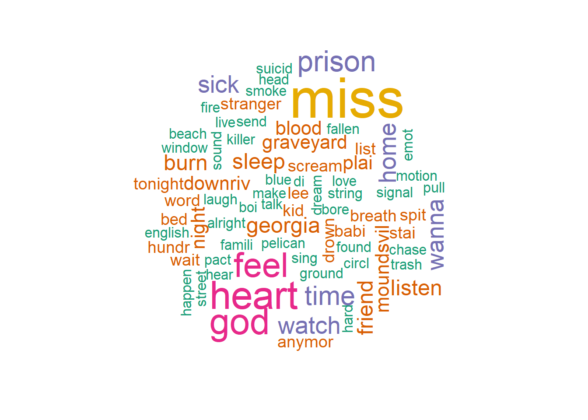

| musicas | letras |
|---|---|
| Smoke Signals | I went with you up to The place you grew up in We spent a week in the cold Just long enough to Walden it with you Any longer, it would have got old Singing Ace of Spades when Lemmy died But nothing’s changed, L.A.’s all right Sleeping in my bed again, and getting in my head And then walk around the reservoir You, you must have been looking for me Sending smoke signals Pelicans circling Burning trash out on the beach One of your eyes is Always half-shut Something happened when you were a kid I didn’t know you then And I’ll never understand Why it feels like I did How Soon Is Now in an ’80s sedan You slept inside of it because your dad Lived in a campground in the back of a van You said that song will creep you out until you’re dead You, you must have been looking for me Sending smoke signals Pelicans circling Burning trash out on the beach I want to live at The Holiday Inn Where somebody else makes the bed We’ll watch TV while The lights on the street Put all the stars to death It’s been on my mind since Bowie died Just checking out to hide from life And all of our problems, I’m gonna solve ’em With you riding shot-gun, speeding, ’cause fuck the cops And you, you must have been looking for me Sending smoke signals Pelicans circling Burning trash out on the beach I buried a hatchet It’s coming up lavender The future’s unwritten The past is a corridor I’m at the exit looking back through the hall You are anonymous I am a concrete wall |
| Motion Sickness | I hate you for what you did And I miss you like a little kid I faked it every time but that’s alright I can hardly feel anything I hardly feel anything at all You gave me fifteen hundred To see your hypnotherapist I only went one time, you let it slide Fell on hard times a year ago Was hoping you would let it go and you did I have emotional motion sickness Somebody roll the windows down There are no words in the English language I could scream to drown you out I’m on the outside looking through You’re throwing rocks around your room And while you’re bleeding on your back in the glass I’ll be glad that I made it out And sorry that it all went down like it did I have emotional motion sickness Somebody roll the windows down There are no words in the English language I could scream to drown you out And why do you sing with an English accent I guess it’s too late to change it now You know I’m never gonna let you have it But I will try to drown you out You said when you met me you were bored You said when you met me you were bored And you you were in a band when I was born I have emotional motion sickness I try to stay clean and live without And I want to know what would happen If I surrender to the sound Surrender to the sound |
| Funeral | I’m singing at a funeral tomorrow For a kid a year older than me And I’ve been talking to his dad, it makes me so sad When I think too much about it I can’t breathe And I have this dream where I’m screaming underwater While my friends are all waving from the shore And I don’t need you to tell me what that means I don’t believe in that stuff anymore Jesus Christ, I’m so blue all the time And that’s just how I feel Always have and I always will I always have and always will I have a friend I call When I’ve bored myself to tears And we talk until we think we might just kill ourselves But then we laugh until it disappears And last night I blacked out in my car And I woke up in my childhood bed Wishing I was someone else, feeling sorry for myself When I remembered someone’s kid is dead Jesus Christ, I’m so blue all the time And that’s just how I feel Always have and I always will I always have and always will And it’s 4am, again And I’m doing nothing Again |
| Demi Moore | Take a dirty picture, babe I can’t sleep and I miss your face In my hands and in my knees Tell me what you wanna do to me Tell me what you’ll do, please I don’t wanna be alone Don’t wanna be alone anymore It got quiet on the other line Said the Sun was coming up And I laughed until I couldn’t breathe Now I’m too tired to go to sleep Now I can’t breathe, and I can’t sleep I don’t wanna be stoned I don’t wanna be stoned anymore I don’t wanna be alone Don’t wanna be alone anymore I’ve got a good feelin’ I’ve got a good feelin’ It doesn’t happen very often |
| Scott Street | Walking Scott Street, feeling like a stranger With an open heart, open container I’ve got a stack of mail and a tall can It’s a shower beer it’s a payment plan There’s helicopters over my head Every night when I go to bed Spending money and I earned it When I’m lonely, that’s when I’ll burn it Do you feel ashamed When you hear my name I asked you: How is your sister? I heard she got her degree And I said: That makes me feel old You said: What does that make me? I asked you: How is playing drums? You said it’s too much shit to carry And what about the band? You said they’re all getting married Do you feel ashamed When you hear my name Anyway, don’t be a stranger Anyway, don’t be a stranger Don’t be a stranger |
| Killer | Sometimes I think I’m a killer I scared you in your house I even scared myself by talking About Dahmer on your couch But I can’t sleep next to a body Even harmless in death Plus, I’m pretty sure I’d miss you And faking sleep to count your breath Can the killer in me Tame the fire in you? Or is there nothing left to do for us? I am sick of the chase But I’m hungry for blood And there’s nothing I can do But when I’m sick and tired And when my mind is barely there When a machine keeps me alive And I’m losing all my hair I hope you kiss My rotten head And pull the plug Know that I’ve burned every playlist And I’ve given all my love Can the killer in me Tame the fire in you? I know there’s somethin’ waiting for us I am sick of the chase But I’m stupid in love And there’s nothing I can do And there’s nothing I can do |
| Georgia | Cold was the night and hard was the ground They found her in a small grove of trees Lonesome was the place where Georgia was found She’s too young to be out on the street Why wasn’t God watching? Why wasn’t God listening? Why wasn’t God there for Georgia Lee? Ida said she couldn’t keep Georgia from dropping out of school I was doing the best that I could But she kept runnin’ away from this world These children are so hard to raise good Why wasn’t God watching? Why wasn’t God listening? Why wasn’t God there for Georgia Lee? Close your eyes and count to ten I will go and hide but then be sure to find me I want you to find me, and we’ll play all over We’ll play all over We’ll play all over again There’s a toad in the witch grass, there’s a crow in the corn Wild flowers on a cross by the road And somewhere a baby is crying for her mom As the hills turn from green back to gold Why wasn’t God watching? Why wasn’t God listening? Why wasn’t God there for Georgia Lee? Why wasn’t God watching? Why wasn’t God listening? Why wasn’t God there for Georgia Lee? |
| Chelsea | For a chemical imbalance You sure know how to ride a train Your revolution is a deathbed And the music is your maid When someone comes a-knockin’ With a needle on a tray Only your lonesome lies beside you For you told me not to stay You are somebody’s baby Some mother held you near No, it’s not important, they’re just pretty words, my dear There is no distraction that can make me disappear No, there’s nothing that won’t remind you I will always be right here And you spit the blood back Spit the blood back, baby I’m amazed that you’re alright Oh, so long, prison boy I won’t be home with you tonight We’re both very sick, our muscles are worn down It’s as if we are one-hundred, know I won’t still be around Because I’ve fallen Yes, I’ve fallen right into the love I’ve found Long before I reach one-hundred I’ll have fallen to the ground And for generations, they’ll romance us, make us more Or much less than ever was before The Chelsea and the floor Make us stand before the masses Like two speakers for the poor When there was no revolution Nothing we were fighting for And you spit the blood back Spit the blood back, baby I’m amazed that you’re alright Oh, so long, prison boy I won’t be home, I won’t be home I won’t be home with you tonight And you can call the service bell When we stay at the Chelsea Hotel And I’ll stay out of my own hell Oh, so long, prison boy I won’t be home, I won’t be home I won’t be home with you tonight Tonight |
| Would You Rather | Playing would you rather When it comes to fire You always say that you’d prefer to drown You were still in the ambulance When the cop suggested You’re the one who tried to burn it down Come to find out I’m a can on a string, you’re on the end We find our way out Of a suicide pact of our family and friends In the background I’ll be waiting We have the same face I laid awake As someone shoved you up against a wall Quarantined in a bad dream He’s half the man And you’re twice as tall Come to find out I’m a can on a string, you’re on the end We find our way out Of a suicide pact of our family and friends In the background I’ll be waiting Next time I see you you’ll show me A hundred different ways to say the same things Come to find out I’m a can on a string, you’re on the end We find our way out Of a suicide pact of our family and friends And when you touch down I’ll be waving |
| You Missed My Heart | Broke into her house, saw her sitting there Drinking coke and whiskey in her bra and underwear Saw him in the kitchen, hanging up the phone I asked him nicely once to pack his things and go He gave her a reassuring look, said he wouldn’t leave But I asked him one more time, this time pulled out my shiv Stuck him in the back and I pulled it out slow And I watched him fall down, and as the morning Sun rose He looked at me and said You missed my heart, you missed my heart You got me good, I knew you would But you missed my heart, you missed my heart Were his last words before he died Looking out the window, up at the blue sky Listening to her scream, listening to her cry A feeling of relief came over my soul I couldn’t take it any longer and I lost control I chased her up the stairs and I pinned her to the ground And underneath her whimpering I could hear the sirens sound I rattled off a list of all the things I missed Like going to the movies with her and the way she kissed me Driving into downtown Wheeling, showing her off Backyard barbecues and reunions in the park I said I missed her skin and when she started laughing And while I clenched down on her wrist, she said, that’s quite a list But there’s one thing you missed You missed my heart, you missed my heart That’s quite a list, but what you really missed You missed my heart, you missed my heart That’s quite a list, but what you really missed Running through the parking lot, running through the fields Policemen on my back, something hit my skull and cracked They dragged me off to jail, set a million dollar bail Where I tried to tie a noose, but I failed and I broke loose I went racing through the prison yard, shot down by a tower guard He got me in the shins, and he got me in the arms They strapped me in the gurney, took me off to the infirmary Where the priest read my last rites And just before, everything went dark I said, he missed my heart, he missed my heart He got me good, I knew he would But he missed my heart, he missed my heart And just before, everything went dark The most poetic dream came flowing like the sea Laying there my lifeblood draining out of me A childhood scene, night sky Moon beams Fishing with my friends sitting in the wild reeds Watching the Ohio river flow at night Waiting for the bullhead catfishes to bite Downriver from the Moundsville prison graveyard Downriver from the Moundsville prison graveyard Downriver from the Moundsville prison graveyard Downriver from the Moundsville prison graveyard Downriver from the Moundsville prison graveyard |
Análise de Sentimentos em Letras de Músicas
utilizando técnicas de NLP no R
r
npl
música
trabalho desenvolvido a partir de técnicas aprendidas no grupo de estudos do PET Estatística e apresentado na XIV Semana da Estatística da Universidade Federal de Uberlândia (UFU).
Introdução
O Processamento de Linguagem Natural (PLN) é um campo interdisciplinar dentro da Ciência da Computação que auxilia no processamento e entendimento da linguagem natural humana. O PLN tem como principal objetivo utilizar técnicas computacionais para transformar textos em um formato que seja compreensível e interpretável para o computador.
Dentro do Processamento de Linguagem Natural (PLN), a Análise de Sentimentos é uma subárea que se concentra em processar e classificar textos com base nas emoções que eles expressam. Essa análise é amplamente utilizada para avaliar diferentes tipos de texto, como letras de músicas, livros, artigos e opiniões de usuários nas redes sociais sobre uma variedade de temas. Para realizar essa avaliação, são empregados dicionários de sentimentos, que atribuem valores positivos ou negativos às palavras, permitindo assim a identificação do tom emocional presente no texto.
Este trabalho usa técnicas de raspagem de dados e processamento de linguagem para coletar, interpretar e analisar as letras de todas as músicas do álbum Stranger in the Alps (2017), da cantora Phoebe Bridgers. Seu objetivo é utilizar técnicas computacionais e estatísticas para verificar se a percepção inicial do ouvinte sobre o álbum corresponde àquilo que se obtém após o processo de análise de sentimentos, uma vez que o álbum é reconhecido por seus ouvintes por possuir mais sentimentos negativos do que positivos.
Metodologia
Coleta de Dados
As letras das músicas contidas no álbum foram coletadas do site Letras, com auxílio de técnicas de Web Scraping que consistem em raspar e extrair dados de uma página na web. Para isso, utilizou-se o R, um software para computação estatística, com auxílio das bibliotecas rvest, para a raspagem de dados, e dplyr, para auxiliar a manipulação dos dados.
Assim obtendo o seguinte conjunto de dados:
Processamento e Manipulação dos Dados
Para estudar as letras das músicas, inicialmente foi feito um processo chamado tokenização, utilizando as bibliotecas tidytext e tidyr. Esse processo faz parte do processamento de linguagem e consiste na quebra do texto em partes menores (“tokens”), que podem ser parágrafos, frases, palavras.
Após a tokenização, foi feita a contagem de cada palavra para observar as que se repetiam mais ao longo das músicas e então entender quais são os sentimentos prevalentes no álbum. Para ajudar a visualizar este comportamento, foi criada uma nuvem de palavras, isto é, uma representação visual em que os tamanhos das palavras estão diretamente relacionadas com a sua frequência dentro do conjunto observado. A nuvem de palavras foi feita utilizando a biblioteca wordcloud.
A Fig. 1 representa a nuvem de palavras gerada a partir do álbum.

Análise de Sentimentos
Para fazer a análise de sentimentos das músicas, foi necessário encontrar uma forma objetiva de classificar as palavras de acordo com as emoções que elas representam, podendo ser uma categorização binária entre positivo e negativo, ou uma classificação mais abrangente. Para isso, foram utilizados três dicionários diferentes de análise de sentimentos, extraídos através da função get_sentiments() (nativa da biblioteca tidytext) e definidos a seguir.
- Bing: Categoriza as palavras de forma binária, como positivas ou negativas.
- Afinn: Atribui às palavras um valor inteiro (entre - 5 e 5) de acordo com o quão positiva ou negativa é a conotação da palavra.
- NRC: Categoriza as palavras entre dois sentimentos (positivo ou negativo) ou entre oito emoções básicas (raiva, antecipação, nojo, medo, alegria, tristeza, surpresa e confiança).
Em primeiro momento, foi realizada uma análise geral para verificar o quão negativas ou positivas são as músicas do álbum. Para isso, foram utilizados os dicionários Bing e Afinn, com o intuito de compará-los. Essa comparação foi feita através de um gráfico de barras gerado com a biblioteca ggplot2, representado pela Fig. 2.
A partir dos gráficos, foi observado um comportamento bastante semelhante entre os dois dicionários. Para o dicionário Affin, apenas a música ‘Georgia’ foi considerada positiva, já para o dicionário Bing, todas as músicas sem exceção foram consideradas negativas. Esse resultado reforça a suposição de que este é de fato um álbum com letras negativas.
Uma vez que o álbum foi analisado de forma integral, utilizou-se o dicionário NRC para aprofundar a análise e verificar quais sentimentos estavam presentes em cada música individualmente. A Fig. 3 representa o gráfico de barras obtido a partir da música ‘Killer’, mas esse processo foi repetido para todas as músicas do álbum.
Com o uso desse dicionário, é possível observar de forma mais completa a gama de sentimentos presente em cada música, auxiliando na compreensão do álbum por inteiro. Na música ‘Killer’, nota-se a presença de todos os sentimentos listados no dicionário usado (NRC), o que traz para a análise uma maior subjetividade, uma vez que é notável na música a presença de sentimentos opostos. Apesar disso, ainda pode-se notar a prevalência dos sentimentos negativos sobre os positivos.
Conclusão
Com o auxílio de ferramentas computacionais de Processamento de Linguagem Natural, foi possível fazer uma análise mais aprofundada sobre o teor emocional das letras das músicas. Os gráficos gerados a partir dos dicionários Bing e Afinn mostraram que o álbum se mantém completamente negativo, com exceção de uma única música pelo Afinn. Com o dicionário NRC, por sua vez, foi possível detectar não somente a polaridade das emoções, mas rotular emoções mais específicas como medo e tristeza, complementando o que foi observado nos dicionários anteriores.
Por fim, o uso conjunto dessas ferramentas trouxe uma compreensão mais rica e aprofundada das emoções transmitidas nas canções e suas nuances. Dessa forma, os resultados obtidos neste estudo validam a suposição inicial de que no álbum Stranger in the Alps de Phoebe Bridgers prevalecem os sentimentos negativos.